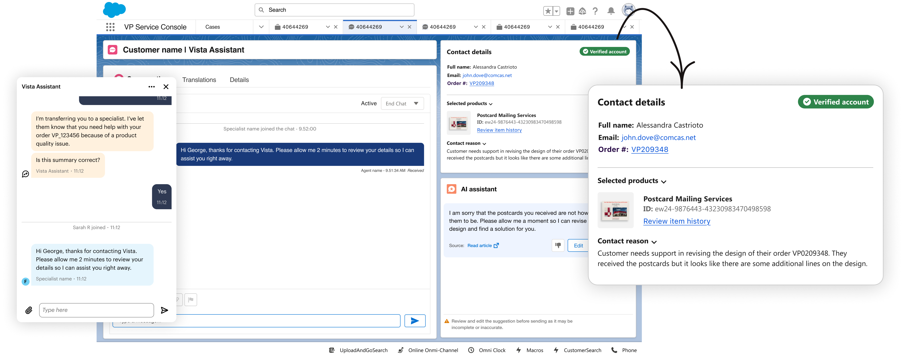
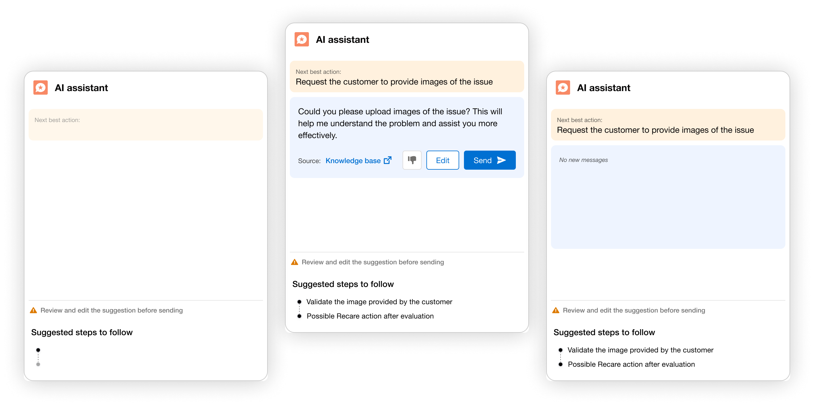
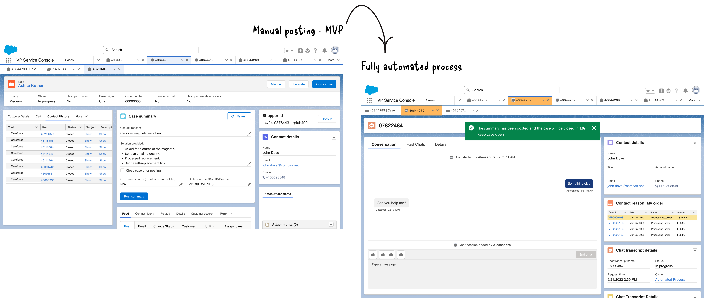

BEFORE
Arrive informed
Prepare the information specialists normally need to reconstruct manually when a conversation is handed over.
- Conversation summary
- Account verification
- Order + product
- Intent
- Handover reason
- Risk flags
Designing the specialist experience across handover, live customer conversations and after-contact work — using AI to remove repetitive tasks while preserving human judgment.
My ownership Led specialist-experience design across handover, AI-assisted replies and after-contact work, reducing operational friction while keeping high-judgement work with specialists.
Focus · Specialist experience · AI-assisted workflow · operations · service design
Partnered with · Product · Engineering · CARE Ops · support specialists
02 — DESIGNING AROUND THE CONTACT LIFECYCLE
Instead of treating AI as a single feature, I looked at where repetitive work appeared across the lifecycle of a support contact — before, during and after the conversation.
Prepare the information specialists normally need to reconstruct manually when a conversation is handed over.
Use conversation context and trusted knowledge to reduce searching and drafting while keeping the specialist in control.
Remove repetitive after-contact work while preserving the policies needed for exceptions and incomplete conversations.
Where could the system safely do the work — and where did judgment still need to stay human?
03 — BEFORE THE CONVERSATION
When Vista Assistant escalated a conversation, specialists still needed to understand who the customer was, what they needed, what order was involved and what had already happened.
Customer contacted support about a missing order. Order and product were identified, account verification completed and available automated options reviewed before handover.
Context already collected by one part of the service should become input to the next.

04 — DURING THE CONVERSATION
Reply recommendations used conversation context and RAG to retrieve relevant knowledge and generate responses aligned with support guidance and QA expectations.
Intent, recent messages and relevant case context.
Surface guidance relevant to the current issue.
Contextual, grounded and ready for specialist review.

05 — AFTER THE CONVERSATION
Case summarisation was repetitive, time-consuming and made harder by specialists working across many tabs and concurrent chat cases.
Notes, wrap-up details and case-feed documentation.
AI produces the conversation summary. The specialist reviews and evaluates it before completing the remaining case work.
Where policy allows, the system takes on more of the administrative work instead of stopping at draft generation.
Customers abandon chats. Connections fail. Conversations end before a resolution is complete. Policy may require the specialist to document the interaction, send an email and keep the case open for another 24 hours.
That meant the experience could not simply be: conversation ends → generate summary → close case.
Multiple rounds of usability testing were used to understand how specialists reviewed summaries, switched between concurrent contacts and recovered from cases that did not follow the happy path.

06 — THE SYSTEM
Across the three workstreams, the same principle kept appearing: systems are good at preparation, retrieval and repetitive administration. Specialists are needed for interpretation, judgment and exceptions.
Move summarisation, context gathering and other administrative work away from manual specialist effort.
Give specialists the information needed to begin work without reconstructing the customer journey.
Avoid making customers repeat information that the service has already collected.
Surface relevant knowledge and draft replies while keeping review and decision-making with the specialist.
Add measured AHT impact, ACW reduction, usability findings or specialist adoption data here once we decide which evidence is strongest.
AI was most valuable when it removed operational friction around specialist judgment — not when it tried to replace that judgment.